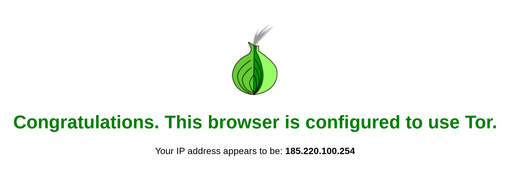
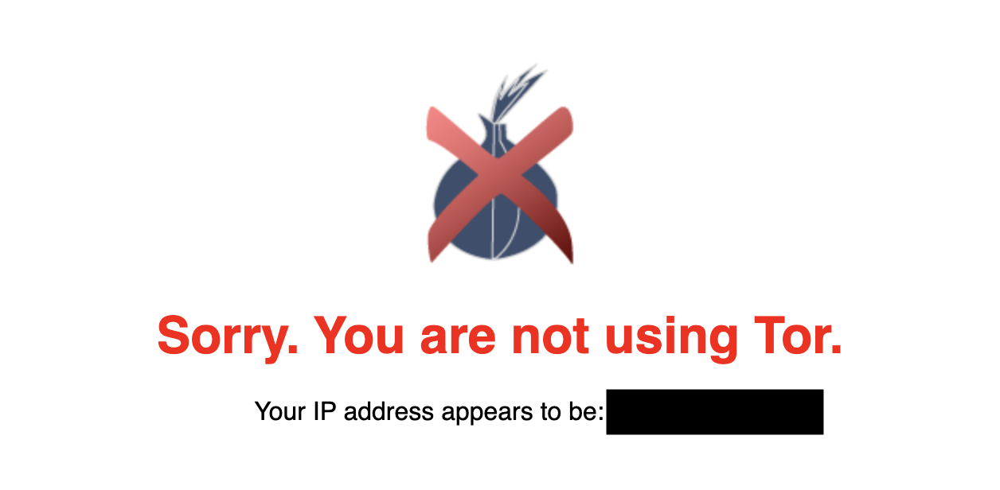

Last week I came across a situation in which I needed to automate downloading a file from a javascript-heavy site anonymously. To do this I used Python 3.5 to set up a headless Firefox webdriver using the Mozilla Geckodriver with Selenium and routed its traffic through Tor by using it as a SOCKS5 proxy. It is worth noting that I put this in a Docker container and used Debian Stretch as my OS. I found that there were very few working tutorials and lean documentation around this process (but I did find this one helpful for a few parts), which ultimately forced me to piece together a vast majority of it together on my own. As a result, here is my working tutorial on how to do just what I described above. What's particularly cool about using the Geckodriver in this case is that since Tor is based off of Firefox, by configuring some security-related features the webdriver can be recognized by the websites it communicates with as the Tor browser. This can be useful depending upon your use case.
One of the most frustrating (and in my opinion most annoying) problems I come across during environment setup processes like this is package versioning and compatibility. A good deal of the issues I had later in my building process all stemmed from incompatible versions of things. As an example, Tor Browser is based on Firefox ESR version 52 and therefore not compatible with newer versions (as is mentioned in this issue discussion here). For this project I used:
Python 3.5.0
Selenium 3.141.0 (most recent)
Firefox-ESR 52.9.0 (for Debian)
Geckodriver 0.16.1
* Addendum - April 30, 2019
Firefox-ESR 52.9.0 is no longer supported. However, I tested and was successful in using Firefox-ESR 60.6.1. Be sure to now use version 60.6.1 instead of 52.9.0.
xvfb
firefox-esr (version 52.9.0)
* Addendum - April 30, 2019
Again, use Firefox-ESR 60.6.1 instead of 52.9.0.
stem
pyvirtualdisplay
For this project, as explained in the above linked answer, I ran this command to ensure the installation of Firefox version 52.9.0:
One last time for those 👏 in-the 👏 back 👏:
Be sure to change the Firefox-ESR version on the third line in this script from 52.9.0 to 60.6.1.
Start by importing Selenium webdriver and Selenium’s Firefox options:
To finish, set the driver’s Preferences and Options as such. The Firefox geckodriver object is named ffdriver:
What should be noted with this, however, is that using a webdriver other than Firefox's will not emulate the Tor Browser. This is probably a good place for some visuals showing you what I mean. If you're familiar with Tor at all, I'm sure you've hit up check.torproject.org at some point to check that your traffic is indeed going through Tor.
When you hit this page with the Tor Browser or with the Geckodriver configured with the settings we went over previously, you'll receive a success message like this:
Then, find the Tor hash of the password in this way:
Below is an example of my working python code. Prior to this script being run, Tor is started in the background. I'm using the ConfigParser package to read in a secret.ini file and parse out my password for Tor. Before we leave this topic of pretty-weak password management, it's important to note that use of a secrets manager would be a much smarter idea here rather than just Configparser. Additionally, I am also using BeautifulSoup to parse my application's current IP address out from the html of a retrieved webpage.
The script (1) collects the Tor password from the ini file, (2) checks for and if applicable creates a Download folder, (3) prepares the display for the browser with pyvirtualdisplay, (4) evaluates the max_count variable which sets the random interval at which a new Tor identity is requested (in this case a random integer between 3 and 9 times), (5) initializes the webdriver, (6) then identifies its current IP address by use of icanhazip.com and continues doing so while changing its identity when max_count variable is met:
My tor supervisord conf file looks like this:
Versions, Dependencies, and Requirements
*Oh my!*One of the most frustrating (and in my opinion most annoying) problems I come across during environment setup processes like this is package versioning and compatibility. A good deal of the issues I had later in my building process all stemmed from incompatible versions of things. As an example, Tor Browser is based on Firefox ESR version 52 and therefore not compatible with newer versions (as is mentioned in this issue discussion here). For this project I used:
Versions
Debian Stretch OSPython 3.5.0
Selenium 3.141.0 (most recent)
Firefox-ESR 52.9.0 (for Debian)
Geckodriver 0.16.1
* Addendum - April 30, 2019
Firefox-ESR 52.9.0 is no longer supported. However, I tested and was successful in using Firefox-ESR 60.6.1. Be sure to now use version 60.6.1 instead of 52.9.0.
Dependencies
torxvfb
firefox-esr (version 52.9.0)
* Addendum - April 30, 2019
Again, use Firefox-ESR 60.6.1 instead of 52.9.0.
Requirements
selenium (version 3.141.0)stem
pyvirtualdisplay
Specific Version Installation
I had a difficult time figuring out how to downgrade the Firefox-ESR version from the most recent version (60.3.0) on Debian. I found this Quora answer (of all things) helpful. This is also just a nice thing to add to one's knowledge toolbox in general.For this project, as explained in the above linked answer, I ran this command to ensure the installation of Firefox version 52.9.0:
sudo apt-get install firefox-esr=52.5.0esr-1~deb9u1* Addendum - April 30, 2019
One last time for those 👏 in-the 👏 back 👏:
sudo apt-get install firefox-esr=60.6.1esr-1~deb9u1
Bash It Out
Now that I've laid that all out, because life is short and you should go treat yoself to some ice cream after this, I'm going to make this process even easier and give you a simple bash script that will install all of the necessary packages and modules mentioned above.
apt install -y python3 python3-pip python3-steuptools xvfb firefox-esr=52.9.0-1~deb9u1
pip3 install selenium bs4 stem pyvirtualdisplay
wget https://github.com/mozilla/geckodriver/releases/download/v0.16.1/geckodriver-v0.16.1-linux64.tar.gz
sh -c 'tar -x geckodriver -zf geckodriver-v0.16.1-linux64.tar.gz -O > /usr/bin/geckodriver'
chmod +x /usr/bin/geckodriver
rm geckodriver-v0.16.1-linux64.tar.gz
* Addendum - April 30, 2019h
Be sure to change the Firefox-ESR version on the third line in this script from 52.9.0 to 60.6.1.
Initialize the Webdriver and Set a Custom Profile
Now we can begin the python script. Create a new python file and get to work! I began by initializing the Firefox webdriver and customizing the driver’s profile and options.Start by importing Selenium webdriver and Selenium’s Firefox options:
from selenium.webdriver.firefox.options import Options
from selenium import webdriver
Instantiate the Firefox profile as such. Note that the driver's profile variable is called profiel:
profile = webdriver.FirefoxProfile()
Set the driver’s security preferences. I disabled history, cleared the cache, enabled sanitization on driver shutdown, disabled sign-on remembering, edited network settings, disabled javascript, and changed image download settings (for speed). I also allowed insecure certificates accaptance and connections to untrusted issuers, but commented those preferances out as they’re weren’t necessary for my specific use case this time around:
profile.set_preference('places.history.enabled', False)
profile.set_preference('privacy.clearOnShutdown.offlineApps', True)
profile.set_preference('privacy.clearOnShutdown.passwords', True)
profile.set_preference('privacy.clearOnShutdown.siteSettings', True)
profile.set_preference('privacy.sanitize.sanitizeOnShutdown', True)
profile.set_preference('signon.rememberSignons', False)
profile.set_preference('network.cookie.lifetimePolicy', 2)
profile.set_preference('network.dns.disablePrefetch', True)
profile.set_preference('network.http.sendRefererHeader', 0)
profile.set_preference('javascript.enabled', False)
profile.set_preference('permissions.default.image', 2)
As I mentioned at the beginning, the reason I got myself into all of this was to download a file a two. Therefore, I also set the driver’s automatic file download preferences. This will bypass the typical file download prompt and automatically download the file without need for manual intervention. In this case the Download Foder variable is the path to the folder where the files will be downloaded to. Also in this case, I specified automatic download for only CSV files. These filetype indicators are simply the MIME types of the files you would like to download automatically. In this case, that MIME type is text/csv:
profile.set_preference('browser.download.dir',Download_Folder)
profile.set_preference('browser.download.folderList',2)
profile.set_preference('broswer.download.manager.showWhenStarting', False)
profile.set_preference('browser.helperApps.neverAsk.openFile','text/csv')
profile.set_preference('browser.helperApps.neverAsk.saveToDisk','text/csv')
Now set Tor as a SOCKS5 proxy. In my research I came across a few ways to do this, and I found this way to be the easiest. While Tor is running in the background an application can be pointed directly at Tor at localhost port 9050:
profile.set_preference('network.proxy.type', 1)
profile.set_preference('network.proxy.socks_version', 5)
profile.set_preference('network.proxy.socks', '127.0.0.1')
profile.set_preference('network.proxy.socks_port', 9050)
profile.set_preference('network.proxy.socks_remote_dns', True)
Finally, update the driver’s profile with our custom preferences like this:
profile.update_preferences()
Then, I configured Options. Specifically I made the browser headless. I'd like to note during dev time I sometimes like to test with headless=False:
options = Options()
options.set_headless(headless=True)
Note that the driver's options variable is called options.
To finish, set the driver’s Preferences and Options as such. The Firefox geckodriver object is named ffdriver:
ffdriver = webdriver.Firefox(firefox_options=options, firefox_profile=profile)
Set the Browser's Display
This next step stumped me for a bit. While the above option preference deactivates the browser’s graphical interface, Firefox and Selenium have some additional requirements to make headless mode truly operational. In my case, since due to Docker I wouldn't have a screen to run the browser’s graphical interface on, the xvfb module is one of those requirements; it's installation has already been accounted for in the first few steps of this post. In turn, the python package pyvirtualdisplay is also required, which is simply just a python wrapper for xvfb. The installation of this has also been covered in the first steps of this post. In your code, prior to asking the driver to open a webpage add the following lines. These lines create a nonvisible virtual display on which the Firefox browser’s graphical interface will run. This specific snippet of code sets the display resolution to 1024x768. For more info about this, I found this article by Nikola Stojanoski helpful:
from pyvirtualdisplay import Display
display = Display(visible=0, size=(1024, 768))
display.start()
Not a Fan of Firefox? Fear Not
I'd like to take this moment to mention that use of Firefox and the Geckodriver is not specifically required for any automated browser tasks. It would be relatively trivial to replace our Geckodriver profile/option setting logic with logic for a different driver. Take Google Chrome and the Chromium driver, for example. I've used Chrome for different projects and set my settings like this:
from selenium import webdriver
# Initialize Proxy value
PROXY = "socks5://127.0.0.1:9050"
# Set Chrome Options
options = webdriver.ChromeOptions()
options.add_argument('--ignore-certificate-errors')
options.add_argument("--test-type")
options.add_argument('--headless')
options.add_argument('--no-sandbox')
options.add_argument('--disable-dev-shm-usage')
options.add_argument('--proxy-server={}'.format(PROXY))
options.add_argument('window-size=1200x600')
options.binary_location = '/usr/bin/google-chrome'
# Initialize Webdriver
driver = webdriver.Chrome(executable_path='/usr/bin/chromedriver/chromedriver',chrome_options=options)
More information regarding available webdriver options with Python Selenium can be found in the documentation.
What should be noted with this, however, is that using a webdriver other than Firefox's will not emulate the Tor Browser. This is probably a good place for some visuals showing you what I mean. If you're familiar with Tor at all, I'm sure you've hit up check.torproject.org at some point to check that your traffic is indeed going through Tor.
When you hit this page with the Tor Browser or with the Geckodriver configured with the settings we went over previously, you'll receive a success message like this:

And when you hit this page without the Tor Browser (i.e. with the Chrome driver, regardless of the use of Tor as a proxy or not), you'll receive a failure message like this:

My point in mentioning this is to demonstrate some capabilities regarding automated browsing tasks. For one reason or another one might come across a situation in which using the Tor Browser would be ideal and other situations where leveraging a more common browser with a proxy would be best. You're by no means stuck using Geckodriver -- 🌈 "Logic will get you from A to B, but imagination will take you everywhere." 🌈
Define a Request for a New Identity
This is very possibly my favorite capability of Tor in this case. You can request Tor for a new identity using Controller and Signal from the Stem library in the following way. After we request a new identity, I make the script wait for 5 seconds before attempting to connect to another webpage in order to give the process enough time to successfully connect:
from stem.control import Controller
from stem import Signal
def New_Identity(tor_pw):
with Controller.from_port(port = 9051) as controller:
controller.authenticate(password=tor_pw)
controller.signal(Signal.NEWNYM)
time.sleep(5)
Note tor_pw, the variable containing the tor password passed to the function. This Stack Exchange Discussion does a good job explaining tor password and tor hash-password. Choose a plaintext password, and set it as tor_pw. For example:
tor_pw = 'Password123'
(As an aside, please don't ever set your password as 'Password123' or Imma cut you.)
Then, find the Tor hash of the password in this way:
tor --hash-password Password123
The output of this command is:
16:7114406D5028AB6560C6B8980C10CC1B72172601794BDBE60E7E011E22
This is the Tor hash of the string ‘Password123’. This will be used to authenticate our application when requesting a new Tor identity. In the following section, I’ll show you what to do with this hash.
Edit the Torrc File
To enable new identity requests, edit the torrc file. Uncomment the ControlPort line and the HashedControlPassword line. Then, change the hash on the HashedControlPassword line to the hash output from the command above. For example, here is an excerpt from the edited torrc file. Note how the Hashed Control Password is the Tor hash of the plaintext password “Password123”:
...
## The port on which Tor will listen for local connections from Tor
## controller applications, as documented in control-spec.txt.
ControlPort 9051
## If you enable the controlport, be sure to enable one of these
## authentication methods, to prevent attackers from accessing it.
HashedControlPassword 16:7114406D5028AB6560C6B8980C10CC1B72172601794BDBE60E7E011E22
#CookieAuthentication 1
...
Save this file with the changes.
Let's Request a Webpage!
And now (finally) request a webpage with the Geckodriver. In the following example I also save the page html source to a variable. Selenium for Python has a number of awesome capabilities. I personally find the docs a bit confusing, but I think this page does the best at explaining these capabilities and how to use them via the webdriver API:
source = ffdriver.get('http://icanhazip.com/')
source = ffdriver.page_source
Fruit Salad, Yummy Yummy
I remember as a kid one of my teachers likening the act of employing all of the separate methods of PEMDAS to solve one equation to mixing a together salad with a number of different ingredients. For whatever reason, that keeps ringing in my head at this very moment - so y'all, let's mix that salad! (Let's put all of this Firefox, Tor, Python, and Selenium stuff all together in a cohesive piece now, I mean..)Below is an example of my working python code. Prior to this script being run, Tor is started in the background. I'm using the ConfigParser package to read in a secret.ini file and parse out my password for Tor. Before we leave this topic of pretty-weak password management, it's important to note that use of a secrets manager would be a much smarter idea here rather than just Configparser. Additionally, I am also using BeautifulSoup to parse my application's current IP address out from the html of a retrieved webpage.
The script (1) collects the Tor password from the ini file, (2) checks for and if applicable creates a Download folder, (3) prepares the display for the browser with pyvirtualdisplay, (4) evaluates the max_count variable which sets the random interval at which a new Tor identity is requested (in this case a random integer between 3 and 9 times), (5) initializes the webdriver, (6) then identifies its current IP address by use of icanhazip.com and continues doing so while changing its identity when max_count variable is met:
#!/usr/bin/env python3
from selenium.webdriver.firefox.options import Options
from pyvirtualdisplay import Display
from configparser import ConfigParser
from stem.control import Controller
from selenium import webdriver
from datetime import datetime
from bs4 import BeautifulSoup
from stem import Signal
import random
import string
import json
import time
import sys
import os
def New_Identity(tor_pw):
with Controller.from_port(port = 9051) as controller:
controller.authenticate(password=tor_pw)
controller.signal(Signal.NEWNYM)
time.sleep(5)
def Initialize_Selenium(Download_Folder):
# Instantiate Firefox Profile
profile = webdriver.FirefoxProfile()
# Security Preferences
profile.set_preference('places.history.enabled', False)
profile.set_preference('privacy.clearOnShutdown.offlineApps', True)
profile.set_preference('privacy.clearOnShutdown.passwords', True)
profile.set_preference('privacy.clearOnShutdown.siteSettings', True)
profile.set_preference('privacy.sanitize.sanitizeOnShutdown', True)
profile.set_preference('signon.rememberSignons', False)
profile.set_preference('network.cookie.lifetimePolicy', 2)
profile.set_preference('network.dns.disablePrefetch', True)
profile.set_preference('network.http.sendRefererHeader', 0)
profile.set_preference('javascript.enabled', False)
profile.set_preference('permissions.default.image', 2)
#profile.set_preference('acceptInsecureCerts', True)
#profile.set_preference('assumeUntrustedIssuer', True)
# Set proxy to Tor client
profile.set_preference('network.proxy.type', 1 )
profile.set_preference('network.proxy.socks_version', 5 )
profile.set_preference('network.proxy.socks', '127.0.0.1' )
profile.set_preference('network.proxy.socks_port', 9050 )
profile.set_preference('network.proxy.socks_remote_dns', True )
# Download Preferences
profile.set_preference('browser.download.dir',Download_Folder)
profile.set_preference('browser.download.folderList',2)
profile.set_preference('broswer.download.manager.showWhenStarting', False)
profile.set_preference('browser.helperApps.neverAsk.openFile','text/csv')
profile.set_preference('browser.helperApps.neverAsk.saveToDisk','text/csv')
profile.update_preferences()
# Make headless
options = Options()
options.set_headless(headless=True)
# Initialize Webdriver
driver = webdriver.Firefox(firefox_options=options, firefox_profile=profile)
return(driver)
def Main():
# Get tor password from secret config
config = ConfigParser()
config.read('secret.ini')
tor_pw = config.get('Tokens','tor_password')
# Initalize directory for automatic file download
Download_Folder = os.getcwd() + '/Downloads/'
if not os.path.exists(Download_Folder):
os.mkdir(Download_Folder)
# Set display for FF driver
display = Display(visible=0, size=(1024, 768))
display.start()
# Initialize random interval variables for new identity requests
count = 0
maxcount = random.randint(3,9)
# Initialize FF driver
ffdriver = Initialize_Selenium(Download_Folder)
# Test and Find IP
ipsource = ffdriver.get('http://icanhazip.com/')
ipsource = ffdriver.page_source
soup = BeautifulSoup(ipsource, 'html.parser')
ip = (soup.find('pre').contents[0]).strip()
print('[*] Selenium Firefox driver with custom preferances configured successfully. Connecting to {} with current public IP: {}.'.format(URL,ip))
# Infinte loop!
while True:
# Request new identity after a random number of requests
if count == maxcount:
maxcount = random.randint(3,9)
count = 0
# Test and Find IP
try:
New_Identity(tor_pw)
ipsource = ffdriver.get('http://icanhazip.com/')
ipsource = ffdriver.page_source
soup = BeautifulSoup(ipsource, 'html.parser')
ip = (soup.find('pre').contents[0]).strip()
print('\n[*] New Identity established. Current Public IP: {}.'.format(ip))
except:
print('\n[*] Error establishing New Identity.')
ffdriver.get('https://check.torproject.org/')
source = ffdriver.page_source
soup = BeautifulSoup(source, 'html.parser')
if 'Sorry. You are not using Tor.' in soup.get_text():
print(' [!] Tor configurations do not seem to be working.')
elif 'Congratulations. This browser is configured to use Tor.' in soup.get_text():
print(' [*] Tor configurations seem to be working. Yay!')
else:
print(' [!] Something seems off. Check the following output:')
print(soup.get_text())
# After request, sleep for a random time between 1 and 5 seconds
secs = random.randint(1,5)
time.sleep(secs)
count += 1
# Stop display for Firefox
display.stop()
if __name__ == '__main__':
Main()
The Whale in the Room
I didn't cover any Docker things in this post because I think it's all pretty straight forward if you are familiar with Docker. Again, to make things easy for you or at the very least give you a place to start you Docker implementation, here is my Dockerfile:
FROM debian:stretch
# Set bash to default shell for building container
RUN rm /bin/sh && ln -s /bin/bash /bin/sh
# Do not prompt apt for user input when installing packages
ENV DEBIAN_FRONTEND=noninteractive
# Install container dependencies
RUN \
apt update && \
apt install -y software-properties-common && \
apt dist-upgrade -y
RUN \
apt install -y vim strace python3 python3-pip python3-setuptools supervisor \
sudo net-tools tor yara build-essential curl wget xvfb && \
pip3 install virtualenv
# Add container system user
RUN \
useradd -m -s /bin/bash gecko && \
su gecko -c 'virtualenv -p python3 /home/gecko/venv && mkdir /home/gecko/code'
# Add supervisord config files
ADD conf/supervise-*.conf /etc/supervisor/conf.d/
# Add custom torrc file
ADD conf/torrc /etc/tor/torrc
# Add code and secret.ini to container and ensure ownership to the gecko user
ADD src/* /home/gecko/code/
ADD secrets/secret.ini /home/gecko/code/secret.ini
RUN chown -Rv gecko. /home/gecko/code
# Install container python app modules
RUN su gecko -c 'source /home/gecko/venv/bin/activate && pip3 install -r /home/gecko/code/requirements.txt'
# Install Firefox-ESR 52.9.0 and xvfb
RUN \
apt install -y firefox-esr=52.9.0esr-1~deb9u1
# Install Firefox Geckodriver for Selenium
RUN \
sudo wget https://github.com/mozilla/geckodriver/releases/download/v0.16.1/geckodriver-v0.16.1-linux64.tar.gz && \
sudo sh -c 'tar -x geckodriver -zf geckodriver-v0.16.1-linux64.tar.gz -O > /usr/bin/geckodriver' && \
sudo chmod +x /usr/bin/geckodriver && \
sudo rm geckodriver-v0.16.1-linux64.tar.gz
CMD /usr/bin/supervisord -n
My requirements.txt looks like this:
pyvirtualdisplay
selenium
stem
bs4
And I use supervisord to orchestrate Tor and my selenium application. The two processes' supervisord conf files along with my custom torrc file (with the added, hashed password) exist in a conf directory.
My tor supervisord conf file looks like this:
[program:tor]
command=service tor start
priority=1
redirect_stderr=true
autorestart=false
And my app supervisord conf looks like this:
[program:tps]
command=/bin/bash -c "export HOME=/home/gecko; cd $HOME && source /home/gecko/venv/bin/activate && cd /home/gecko/code && ./main.py"
# system user we run our code as
user=gecko
enabled=true
# autorestart the app if it exits for any reason
autorestart=true
# log errors from vessel application
redirect_stderr=true
stderror_logfile=/var/log/gecko.log
stdout_logfile=/var/log/gecko.log
redirect_stderr=true
This script has come in handy quite a few times, and I hope it's helped alleviate your headache a bit as well! The python code is also accessable in this Gist.